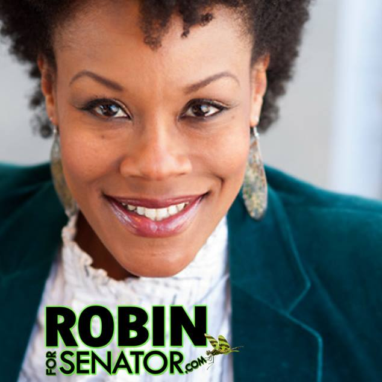

Candidates for the 2016 Elections
This page lists candidates for state and federal elections for people in New York State in the following districts:
Congressional District 10 (Federal: House of Representatives)
Senatorial District 26 (State)
Assembly District 66 (State)
These are the districts that serve the part of Manhattan where the Borough of Manhattan Community College is located.
FEDERAL
Candidates for Federal government positions will be elected on November 8, 2016
The Federal government has three branches:
The Executive Branch: President, Vice-President, Cabinet
The Legislative Branch: also known as Congress, made of the Senate and the House of Representatives
The Judicial Branch: appointed by the President and confirmed by the Legislative Branch.
President
One for the Entire Country. Elected every 4 years. The President chooses a Vice President and appoints the members of the Cabinet.
-
Hillary Clinton (Democrat) – https://www.hillaryclinton.com.

-
.jpg) Donald Trump (Republican) – https://www.donaldjtrump.com.
Donald Trump (Republican) – https://www.donaldjtrump.com.
-
 Jill Stein (Green Party) – http://www.jill2016.com.
Jill Stein (Green Party) – http://www.jill2016.com.
-
 Gary Johnson (Libertarian) – https://www.johnsonweld.com.
Gary Johnson (Libertarian) – https://www.johnsonweld.com.
Congress
The US Congress is made up of two houses, the Senate and the House of Representatives
Senate
100 Senators in total; two per state. Elected every 6 years. The current election is for one of the two Senate seats. Elizabeth Warren holds the other seat in New York State and is not up for reelection.
-
Chuck Schumer (Democrat) – - Incumbent http://www.chuckschumer.com.
-
 Wendy Long (Republican) – - Attorney, Ex-Congressional Aide, Conservative Activist http://www.wendylong.com.
Wendy Long (Republican) – - Attorney, Ex-Congressional Aide, Conservative Activist http://www.wendylong.com.
-
 Robin Laverne Wilson (Green Party) – - Freelance Media Producer & Filmmaker http://www.robinforsenator.com.
-
Alex Mercedes (Libertarian) – - Marketing Consultant & ‘13 NYC Public Advocate Candidate Link to http://alexmercedforny.com.
435 elected Representatives plus 6 non-voting members from Washington D.C., Puerto Rico and other territories. The number per state is based on state population from Census data. Elected every 2 years. Election by congressional district. BMCC is part of Congressional district 10 which serves the west side of Manhattan, parts of the Brooklyn shore and into Brooklyn around Borough Park and Bensonhurst.
-
 Jerrold Nadler (Democrat) – incumbent http://www.jerrynadler.com.
Jerrold Nadler (Democrat) – incumbent http://www.jerrynadler.com.
-
 Philip Rosenthal (Republican) – Astrophysicist, Attorney & Businessman http://www.rosenthalforcongress.com.
Philip Rosenthal (Republican) – Astrophysicist, Attorney & Businessman http://www.rosenthalforcongress.com.
-
 Mike Itkis (Independant) – IT Engineer & Army Reserve Officer http://itkisforcongress.com.
Mike Itkis (Independant) – IT Engineer & Army Reserve Officer http://itkisforcongress.com.
NEW YORK STATE
New York State also has three branches:
The Executive Branch: Governor, the Comptroller and the Attorney General are elected. Others are appointed by the Governor with approval by the senate.
The Legislative Branch: made up of two houses, the Senate and the Assembly
The Judicial Branch
Special Note: there is a primary election on September 13 to determine party candidates for the Legislative branch in the November 8 election. Primary voting is per party. Primary winners from each party will then face each other in the November election. The Executive branch is not up for election.
New York State Assembly
150 Assembly members in the state. Elected every 2 years. BMCC is part of Assembly District 66.
- Democratic Primary
-
Deborah Glick - Incumbent – http://www.deborahglick.com.
-
 Jim Fouratt – http://jimfouratt4assembly.nyc.
Jim Fouratt – http://jimfouratt4assembly.nyc.
No candidates filed for election
New York State Senate
62 state senators. Elected every 2 years. BMCC is part of Senatorial District 26.
Democratic Primary
-
 Daniel Squadron http://www.danielsquadron.org
Republican Primary
Daniel Squadron http://www.danielsquadron.org
Republican Primary
No candidates filed for election
Sources
The information above was gathered from the following sources:
- https://www.whitehouse.gov/1600/legislative-branch.
- https://www.whitehouse.gov/1600/executive-branch.
- https://ballotpedia.org/New_York_elections,_2016.
- https://nyc.pollsitelocator.com/
- http://www.urbanresearchmaps.org/nycongress2012/map.html
- https://www.nysenate.gov/branches-government-new-york-state.